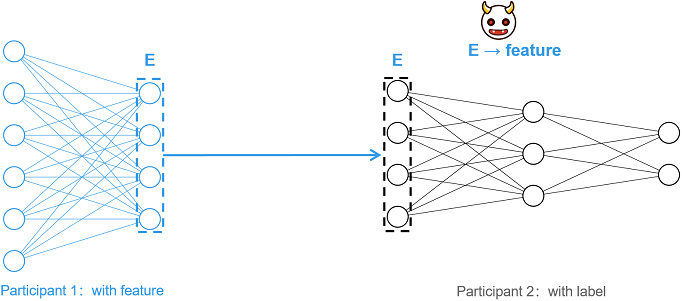
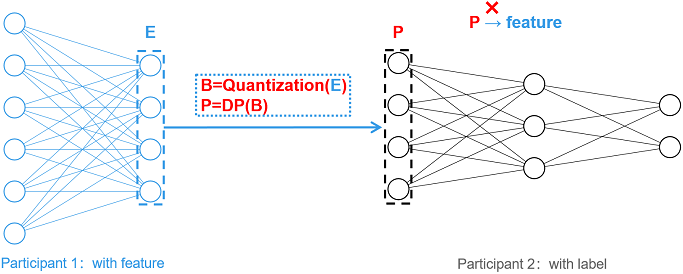

Vertical Federated-Feature Protection Based on Information Obfuscation

Background
Vertical Federated Learning (vFL) is a mainstream and important joint learning paradigm. In vFL, n (n ≥ 2) participants have a large number of identical users, but the overlap of user characteristics is small. MindSpore Federated uses Split Learning (SL) technology to implement vFL. Taking the two-party split learning shown in the figure below as an example, each participant does not share the original data directly, but shares the intermediate features extracted by the local model for training and inference, satisfying the privacy requirement that the original data will not be leaked.
However, it has been shown [1] that an attacker (e.g., participant 2) can reduce the corresponding original data (feature) by intermediate features (E), resulting in privacy leakage. For such feature reconstruction attacks, this tutorial provides a lightweight feature protection scheme based on information obfuscation [2].

Scheme Details
The protection scheme is named EmbeddingDP, and the overall picture is shown below. For the generated intermediate features E, the obfuscation operations such as Quantization and Differential Privacy (DP) are applied sequentially to generate P and send P to the participant 2 as an intermediate feature. The obfuscation operation greatly reduces the correlation between the intermediate features and the original input, which makes the attack more difficult.

Currently, this tutorial supports single-bit quantization and differential privacy protection based on random responses, and the details of the scheme are shown in the figure below.
Single-bit quantization: For the input vector E, single-bit quantization will set the number greater than 0 to 1 and the number less than or equal to 0 to 0, generating the binary vector B.
Differential privacy based on random responses (DP): Differential privacy requires the configuration of the key parameter
eps. Ifepsis not configured, no differential privacy is performed and the binary vector B is directly used as the intermediate feature to be transmitted. Ifepsis correctly configured (i.e.,epsis a non-negative real number), the largerepsis, the lower the probability of confusion and the smaller the impact on the data, and at the same time, the privacy protection is relatively weak. For any dimension i in the binary vector B, if B[i] = 1, the value is kept constant with probability p. If B[i] = 0, B[i] is flipped with probability q, i.e., so that B[i] = 1. Probabilities p and q are calculated based on the following equations, where e denotes the natural base number.

Feature Experience
This feature can work with one-dimensional or two-dimensional tensor arrays. One-dimensional arrays can only consist of the numbers 0 and 1, and two-dimensional arrays need to consist of one-dimensional vectors in the one-hot encoded format. After installing MindSpore and Federated, this feature can be applied to process a tensor array that meets the requirements, as shown in the following sample program:
import mindspore as ms
from mindspore import Tensor
from mindspore.common.initializer import Normal
from mindspore_federated.privacy import EmbeddingDP
ori_tensor = Tensor(shape=(2,3), dtype=ms.float32, init=Normal())
print(ori_tensor)
dp_tensor = EmbeddingDP(eps=1)(ori_tensor)
print(dp_tensor)
Application Examples
Protecting the Pangu Alpha Large Model Cross-Domain Training
Preparation
Download the federated code repository and follow the tutorial Longitudinal Federated Learning Model Training - Pangu Alpha Large Model Cross-Domain Training, configure the runtime environment and experimental dataset, and then run the single-process or multi-process example program as needed.
git clone https://gitee.com/mindspore/federated.git
Single-process Sample
Go to the directory where the sample is located and execute running single-process sample in steps 2 to 4:
cd federated/example/splitnn_pangu_alpha
Start the training script with EmbeddingDP configured:
sh run_pangu_train_local_embedding_dp.shView the training loss in the training log
splitnn_pangu_local.txt:2023-02-07 01:34:00 INFO: The embedding is protected by EmbeddingDP with eps 5.000000. 2023-02-07 01:35:40 INFO: epoch 0 step 10/43391 loss: 10.653997 2023-02-07 01:36:25 INFO: epoch 0 step 20/43391 loss: 10.570406 2023-02-07 01:37:11 INFO: epoch 0 step 30/43391 loss: 10.470503 2023-02-07 01:37:58 INFO: epoch 0 step 40/43391 loss: 10.242296 2023-02-07 01:38:45 INFO: epoch 0 step 50/43391 loss: 9.970814 2023-02-07 01:39:31 INFO: epoch 0 step 60/43391 loss: 9.735226 2023-02-07 01:40:16 INFO: epoch 0 step 70/43391 loss: 9.594692 2023-02-07 01:41:01 INFO: epoch 0 step 80/43391 loss: 9.340107 2023-02-07 01:41:47 INFO: epoch 0 step 90/43391 loss: 9.356388 2023-02-07 01:42:34 INFO: epoch 0 step 100/43391 loss: 8.797981 ...
Multi-process Sample
Go to the directory where the sample is located, install the dependency packages, and configure the dataset:
cd federated/example/splitnn_pangu_alpha python -m pip install -r requirements.txt cp -r {dataset_dir}/wiki ./
Start the training script on Server 1 with EmbeddingDP configured:
sh run_pangu_train_leader_embedding_dp.sh {ip1:port1} {ip2:port2} ./wiki/train ./wiki/train
ip1andport1denote the IP address and port number of the participating local server (server 1).ip2andport2denote the IP address and port number of the peer server (server 2).. /wiki/trainis the training dataset file path, and. /wiki/testis the evaluation dataset file path.Start training script of another participant on Server 2:
sh run_pangu_train_follower.sh {ip2:port2} {ip1:port1}
View the training loss in the training log
leader_process.log:2023-02-07 01:39:15 INFO: config is: 2023-02-07 01:39:15 INFO: Namespace(ckpt_name_prefix='pangu', ...) 2023-02-07 01:39:21 INFO: The embedding is protected by EmbeddingDP with eps 5.000000. 2023-02-07 01:41:05 INFO: epoch 0 step 10/43391 loss: 10.669225 2023-02-07 01:41:38 INFO: epoch 0 step 20/43391 loss: 10.571924 2023-02-07 01:42:11 INFO: epoch 0 step 30/43391 loss: 10.440327 2023-02-07 01:42:44 INFO: epoch 0 step 40/43391 loss: 10.253876 2023-02-07 01:43:16 INFO: epoch 0 step 50/43391 loss: 9.958257 2023-02-07 01:43:49 INFO: epoch 0 step 60/43391 loss: 9.704673 2023-02-07 01:44:21 INFO: epoch 0 step 70/43391 loss: 9.543740 2023-02-07 01:44:54 INFO: epoch 0 step 80/43391 loss: 9.376131 2023-02-07 01:45:26 INFO: epoch 0 step 90/43391 loss: 9.376905 2023-02-07 01:45:58 INFO: epoch 0 step 100/43391 loss: 8.766671 ...
Works Cited
[1] Erdogan, Ege, Alptekin Kupcu, and A. Ercument Cicek. “Unsplit: Data-oblivious model inversion, model stealing, and label inference attacks against split learning.” arXiv preprint arXiv:2108.09033 (2021).
[2] Anonymous Author(s). “MistNet: Towards Private Neural Network Training with Local Differential Privacy”. (https://github.com/TL-System/plato/blob/2e5290c1f3acf4f604dad223b62e801bbefea211/docs/papers/MistNet.pdf)